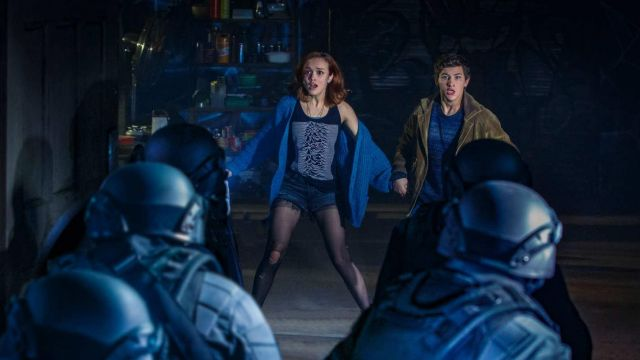

Como un videojuego, como el mejor libro de aventuras o como la mejor película de Spielberg, Ready Player One se desarrolla entre el mundo real y el ficticio (¿acaso no son lo mismo?). Mientras la aventura avanza, cientos de referencias (aka easter eggs) se acumulan en la pantalla, y esto tiene su parte buena y su parte mala.
La buena: Que todo el rato uno está eufórico encontrando a sus héroes o iconos favoritos.
La mala: Que si te concentras en encontrarlos al final te distraes de lo que importa.
Así que, SI AÚN NO VISTE LA PELICULA, MEJOR NO LEAS ESTOS EASTER EGGS a menos que ya la hayas visto y quieras descubrir qué encontraste y qué te perdiste. Recuerda que es una película llena de detalles ocultos que necesitarás ver varias veces para captarlos todos. ¡Disfruta explorando!
1°
- Van Halem suena con Jump por las calles de Columbus.
2°
- Minecraft es uno de los primeros planetas que se nos muestran dentro de OASIS.
3°
- En la misma secuencia introductoria, Batman ayuda a unos escaladores a subir el Everest.
4°
- En la solapa de la chaqueta de Halliday, no te pierdas su chapa con los colores del juguete electrónico Simon.
5°
- Más adelante, en el resto de la película lo veremos con una camiseta de Space Invaders.
6°
- Y seguro que no se te pasó la temática Star Trek de su funeral, con el logo de la Flota Estelar bien visible.
7°
- Por ahí anda también Sonic el erizo de Sega.
8°
- Y Marvin el marciano de los Looney Tunes.
9°
- El planeta Doom donde Hache lucha por monedas viene del universo de Voltron.
10°
- Este personaje dispara un rifle de asalto de Halo.
11°
- Y liquida a Freddy Krueger, Duke Nukem y avestruces voladoras del juego Joust; se le escapa Jason Voorhees.
12°
- Pasemos a la fascinante carrera: ahí Parzival conduce el DeLorean
Es una de las referencias más maravillosas de la película. De hecho podemos considerarlo un Easter Egg por los pelos ya que la pasión que el protagonista de Ready Player One siente por Regreso al futuro deja claro que tarde o temprano la referencia a esta trilogía de Robert Zemeckis se iba a hacer realidad. Muchos pensábamos que jamás volveríamos a ver a esta máquina del tiempo en acción así que solo podemos agradecer a los animadores de esta película que nos hayan podido brindar estas estupendas imágenes. ¡Por cierto! El circuito del tiempo del DeLorean es el mismo que en la película original 1955 y 1985.
13°
- Hache conduce un Bigfoot, el Monster Truck original diseñado en 1989.
14°
- Ya sabes que Art3mis pilota la moto de Kaneda en Akira, adornada con pegatinas de Atari, Taito, Sega, Hello Kitty y hasta el corazón arco iris de Lisa Frank.
15°
- Más coches en la carrera: el Plymouth Fury de 1958 de Christine, la furgoneta de El equipo A, el V8 Interceptor de Mad Max, el Batmóvil de los 60, el Mach 5 de Meteoro (Speed Racer), un Fórmula 1 del juego Pole Position, el Trans Am de Burt Reynolds en Los caraduras...
16°
- Y pilotos: Lara Croft (Tomb Raider), Dizzy (Gears of War) y Ryu (Street Fighter) se preparan para subir a sus vehículos.
17°
- Los coches pasan delante de un cartel de Delta City, la Detroit futurista de RoboCop.
18°
- Y de un cine con la película Jack Slater III en la marquesina. Es el filme ficticio de Arnold Schwarzenegger en El último gran héroe; escrita por Zak Penn, guionista de Ready Player One. Menuda sorpresa se llevó al verlo.
19°
- Durante la carrera uno de los mayores peligros es el gran T-Rex de Parque Jurásico.
20°
- Una distracción más destinada a que los jugadores olviden el verdadero motivo de todo esto. No hay un villano mejor que este, su cameo es glorioso, emocionante y totalmente spielbergiano.
21°
- El final boss de la carrera es nada menos que King Kong.
22°
- Nada de Donkey Kong ni el gorila gigante de Peter Jackson… Este King Kong que vemos en el rascacielos en Ready Player One rodeado de helicópteros es la versión del amigo de Spielberg.
23°
- Parzival empieza la carrera con un cinturón de Thundercats, pero acaba con muchas nuevas ganancias.
24°
- Decide comprarse un Cubo de Rubik rebautizado como Cubo Zemeckis en honor al director de Regreso al futuro y amigo de Spielberg.
25°
- También ve la Santa Granada de Antioquía de Los caballeros de la mesa cuadrada.
- Para los fans de los Monty Phyton este es, sin duda, uno de los cameos más especiales. La Santa Granada de Antioquía de la película Los caballeros de la mesa cuadrada aparece en el mercado… Una pena que al usarla más adelante no digan eso de: "Oh, Señor, bendice esta Tu granada de mano, que con ella Tu majestuoso golpe puede partir en pequeños pedazos a tus enemigos, en Tu misericordia".
26°
- Ahora que Parzival es una estrella, tiene como fan a Beetlejuice.
27°
- Y Art3mis le pone unas gafas de Clark Kent para que pase desapercibido.
28°
- De vuelta al mundo real, seguro que te moló la camiseta de Samantha: la portada del disco Unknown Pleasures de Joy Division.
29°
- Un repaso a toda la cacharrería que hay en el taller de Hache, además de la Battlestar Galactica en la que está trabajando: el ED-209 de RoboCop, la nave Sulaco de Aliens, la Eagle 5 de La loca historia de las galaxias, un E-Frame de Exosquad, una nave Viper de Battlestar Galactica, un EVA pod de 2001: Una odisea del espacio, el Ferrari 250 GT California de Todo en un día y la Valley Forge de Naves silenciosas.
30°
- Por supuesto, también El gigante de hierro. Que sirva Ready Player One para recuperar una de las mayores obras de animación de la historia del cine. El gigante de hierro, de Brad Bird, aparece, cómo no, en la batalla final. Es el E.T. de finales de los 90 y principios de los 2000. Una película tierna, evocadora y con la que creció toda una generación.
31°
- En las paredes se ven pósters de El señor de las bestias, La mosca (1986) y En busca del arca perdida. Y un par de detalles adicionales de Regreso al futuro: un aeropatín y un cartel electoral de Goldie Wilson, alcalde de Hill Valley.
32°
- Aún en el taller, Parzival y Ar3mis discutían sobre uno de los juegos favoritos de Halliday: GoldenEye. Otro juego del gusto de Halliday debió de ser Galaga, pues se ve un póster del arcade en uno de sus flashbacks.
33°
- Películas que menciona en esos flashbacks de conversación con Morrow: Las alucinantes aventuras de Bill y Ted y Cristal oscuro. De esta última toma el nombre de Kira para referirse a una mujer llamada Karen.
34°
- El Lex Luthor de Superman (1978) es mencionado vía una línea de diálogo: “Algunas personas pueden leer Guerra y paz y salir pensando que es una simple historia de aventuras. Otros pueden leer los ingredientes en el envoltorio de un chicle y descubrir secretos del universo”.
35°
- Antes de vestirse como Buckaroo Banzai (¿quién?) para su cita con Art3mis, Parzeval considera looks similares a Michael Jackson en Thriller, Prince en Purple Rain y los Duran Duran.
36°
- En la misma discoteca están Harley Quinn, Joker, Blanka (Street Fighter), Deathstroke y hasta Gandaf.
37°
- Uno de los camareros lleva un gorro como los de Devo.
38°
- Y se baila la canción discotequera por excelencia: Stayin' Alive, de los Bee Gees.
39°
- Por supuesto, a nadie se le escapa que el segundo acto de la película tiene lugar dentro de El resplandor, la adaptación de Stanley Kubrick de la novela de Stephen King.
40°
- El comandante Shepard de Mass Effect. Podemos reconocer a este icónico personaje de los videojuegos gracias a su armadura N7, reservada para los grandes soldados de OpEspec. Esta saga de BioWare tiene presencia a través de su protagonista masculino en su aspecto más reconocible, pelo rapado, la línea roja del uniforme. Parzival y Art3mis se lo encuentran en la parte final de la película en la sala de neones. A Shepard siempre le ha gustado bailar…
41°
- Daito tiene una chapa de Mortal Kombat.
42°
- El villano Sorrento hace referencias a Todo en un día, El club de los cinco, Robotron y ofrece a Parzibal el Halcón Milenario de Star Wars.
43°
- "Anal rasrag, urbás besal, dogiel dienvé" es el conjuro que pone en funcionamiento el orbe, y también el que pronuncia Merlín en Excalibur.
44°
- Dragones y mazmorras. Este guiño es precioso. En una de las escenas más emocionantes de la película, Parzival menciona lugares fantásticos y convoca a todos los jugadores a reunirse en The Gunting Mines of Gygax. Que es un guiño a Gary Gygax, el hombre que creó al juego de mesa original de Dragones y mazmorras, que luego se convirtió en la mítica serie de dibujos.
42°
- Daito llega a la batalla en la Serenity de Firefly.
43°
- Más naves espaciales: X-Wing de Star Wars, Swordfish II de Cowboy Bebop, Thunderfighter de Buck Rogers...
44°
- Se menciona tanto el planeta Arrakis como la casa Harkonnen de Dune.
45°
- Parzival arenga a los guerreros con la pose y el radiocassette de John Cusack en Un gran amor. Solo que, en vez de Peter Gabriel, suenan los Twisted Sisters con We're Not Gonna Take It.
46°
- También hay ranas guerreras de Battletoads, soldados de Halo, Deadshot, Catwoman, Batgirl, Spawn, Chucky el muñeco diabólico, Red Lion de Voltron, el Cíclope de Simbad y la princesa, Raiden y Sub-Zero de Mortal Kombat, Big Daddy de BioShock, las Tortugas Ninja, He-Man de Masters of the Universe.
47°
- Hay una gran pelea entre el RX-78-2 de Mobile Suit Gundam y Mechagodzilla, que finalmente es derrotada con una pelota de goma de Madballs.
48°
- La muerte del gigante de hierro es hundiéndose con el pulgar hacia arriba, como el T-800 en Terminator 2.
49°
- Y el juego Adventure que supone la última prueba de OASIS: la historia sobre su easter egg con el nombre del autor es real.
50°
Antes de terminar, dos citas de cine clásico:
— "Ningún hombre con amigos ha fracasado", de ¡Qué bello es vivir!
— "No me entusiasma la realidad, pero sigue siendo el único lugar donde obtener una comida decente", de Groucho Marx.
51°
- Ah, y la correa marrón de Han Solo. Sí, este easter egg es muy, muy sutil. Difícil de encontrar porque los creadores de Ready Player One no solo se contentan con poner referencias escondidas sino que también las retuercen para que sea más complicado identificarlas. En este caso, en el poster de los protagonistas que intentan imitar Matrix, Parzival lleva bajo la chaqueta negra de Neo las correas de Han Solo.
52°
- La canción que suena al final de la película es You Make My Dreams, de Hall & Oats; es el tema que el autor de la novela, Ernest Cline y su esposa utilizaron en la boda.
Licencia
Uno de los cometidos de la historia de Ernest Cline es el de hacer un homenaje a la cultura de los 80 y 90 a través de un mundo, el de Oasis, que no entiende de épocas y en el que hay cabida para todo. Pero claro, no es tan sencillo meter a los personajes que quieran y ya está, para ello hace falta una cosa llamada licencia. Esto fue uno de los trabajos más duros de la producción de esta película. Para ello, la productora tuvo que negociar uno a uno con todos los estudios para conseguir el derecho a que ciertos personajes aparecieran en la película. Fue así como en la película de Steven Spielberg pudimos ver a algunos de los nombres más importantes del mundo del cine y los videojuegos pasearse por Oasis.
Link del Libro de Ernest Cline
Link directoCartelera Oficial de la pelicula "Ready Player One"

Re estreno de la pelicula el dia 23 de noviembre a las 17:15 horas en el Cine Multiplex.
Ready Player One es una película live-action de ciencia ficción y acción producida y dirigida por Steven Spielberg y escrita por Zak Penn y Ernest Cline, basada en la novela con el mismo nombre de Ernest Cline. La película está protagonizada por Tye Sheridan, Olivia Cooke, Ben Mendelsohn, T. J. Miller, Simon Pegg, y Mark Rylance.
La película está situada en un mundo distópico, donde la población pasa la mayoría del tiempo en un videojuego de realidad virtual llamado OASIS. Cuando su fundador muere y deja su propiedad a la primera persona que encuentre un tesoro escondido jugando y resolviendo acertijos, se produce una carrera entre un joven y sus amigos, y una megacorporación malvada que quiere controlar OASIS por sí mismos.